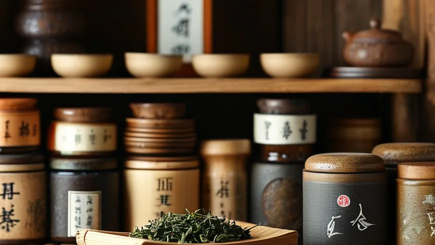

这一周茶圈最值得说的两件事：一是9月全国茶叶出口量价齐升，单月出口4.2万吨、同比涨11.79%；二是云南勐海挂上了全国最大出口茶叶"大基地"牌匾。另一边，新茶饮规模突破3000亿，正把上游好原料一批批拉走。对惠州喝茶的人来说，风吹到茶桌上就一句话——会挑比多买值钱。香得实在的茶，才经得起年份和市场的双重考验。
🌿 开篇问答
Q1：今年茶叶出口形势到底怎么样？
量减价增。前九个月出口近29.5万吨，同比略降，但出口额和均价都在涨；9月单月出口4.2万吨，同比增11.79%，海外越来越看品质而不看低价。
Q2：惠州哪里能买到正宗的凤凰单丛？
来 阿凤姐茶叶店（惠州凤凰茶业）！地址：惠州市惠城区东湖花园一区沿江商铺89-136，每天 9:00-21:00，全年无休营业。电话：13435567385（微信同号，支持全国快递）。批发零售都做，可以先来喝一杯再定。
Q3：云南勐海那个"大基地"是什么？
全国面积最大的出口茶叶标准化原料基地，备案茶园75.7万亩，实行统一种植、统一投入品、统一病虫害防治、统一检测、统一追溯，从源头保证出口原料稳定。
【场景开头】
周六下午三点多，东平这边太阳还没落下去，茶室里已经坐满。陈老板从酒楼过来，围裙都还没解；小美抱着手机坐在门边，说等会儿还得回店里；李叔照旧占着靠墙那个老位子；张先生最后到，手里拎着两盒礼盒，说下个月要送客户。
我烧水，顺手把盖碗一个个烫过一遍。"今天不讲故事了，讲点这周听到的正经事。"
李叔笑："你哪天不讲故事？"我把杯子推过去："先喝，喝完再说。"
【第一幕：出口的单子，量少了钱多了】
陈老板先开的口。他说他有个做外贸的朋友，最近老念叨一个数——今年前九个月，全国茶叶出口二十九万多吨，比去年少了一点，可出口的钱反倒多了，一斤卖得比去年贵。
"这算好事还是坏事？"小美抬头问。
我说，说明外头不图便宜了。以前拼量，谁便宜谁走货；现在人家看品质、看标准。九月份单月出口四万多吨，同比涨了快一成二，量价一块儿上去，这才是正经做茶的人愿意看到的。李叔放下杯子："那我们这种小店，跟得上吗？"我说，跟得上。我们从来不做最便宜的那一档，这条底线守了这么些年，现在反倒成了便宜占。
【第二幕：勐海的大基地，给茶山立了规矩】
张先生插话，说他看到云南勐海挂了块牌匾——全国最大的出口茶叶"大基地"，光备案茶园就七十多万亩，云南这样的基地已经有四个。
"挂牌子有什么用？"陈老板不解。
我说用处大。以前散户茶园东一块西一块，标准全不一样，收茶的心里没底。现在统一管种植、管投入品、管病虫害、管检测、管追溯，从头到尾一条线。这么出来的茶，人家外国客户才敢长期下单，不是做一票就走。
我给大伙续水："其实潮州凤凰山也一样道理。老茶农那套'哪片山、哪一季、哪个人采'的讲究，说白了就是最早的标准。"
【第三幕：奶茶店在跟我们抢茶】
小美这时候来劲儿了，说她们那条街今年新开了三家奶茶店，全在讲"原叶茶底"。
我点头。今年新茶饮市场三千多亿，牌子四千多个，福建那边一年给全国奶茶店供十几万吨基底茶，占了全国一半还多。有个县，全县七成以上的茶都拿去做奶茶茶底了。
李叔皱眉："那我们的茶是不是快被抢光了？"
"抢不光的，"我说，"奶茶要的是稳定、好复制，一吨一吨一个味儿。我们这种高山老丛，一株一个脾气，工厂用不上。可反过来——原料一紧，好茶就抢手。今年产地本来就减了产，你手上那罐蜜兰香，明年再想找一模一样的，得看缘分。"

【第四幕：一万亿之后，怎么选、怎么存】
张先生把礼盒挪到桌子中间，问得实在："那我送客户，怎么选才不出错？"
我说三句话。第一，别图名头，图香气。开罐香气能立起来的，基本不会差。第二，看耐泡。好单丛十二三泡还有味，泡三泡就淡的，别管它叫什么香。第三，得存得住。密封、避光、防潮，惠州这天气回南天最难缠，紫砂罐加铝箔袋，稳当。
小美问："我自己喝呢？"
"那更简单，"我说，"先买小罐试，喝着舒服再上大罐。今年这行情好茶不等人，但也别一次囤太多——茶是拿来喝的，放坏了才是真亏。"
【尾声】
天黑前他们就散了。张先生走时带了两罐，说先送一盒试试，成了再补。小美说下回带店里的小妹来学泡茶。陈老板到门口还回头喊了一句："下周六我还来啊。"
我收拾茶具，盖碗里还剩一点叶底，摊开看，叶片完整，边缘红亮。这一周的新闻说到底就一件事：市场越来越认"真的东西"。做茶的守住这一条，比什么行情都稳。
📌 FAQ 常见问题
Q：新茶饮真的会抢走我们的茶吗？
A：抢的是量大、能标准化的中低端原料。高山老丛一株一个味，工厂用不了；但原料整体偏紧之后，好茶反而更抢手。
Q：惠州买茶去哪比较稳？
A：找能坐下来试喝的店。先小罐试，香气立得起来、十二三泡还有味的，再买大罐，别只听名字。
Q：惠州这种潮湿天气，茶叶怎么存？
A：密封、避光、防潮三件事。紫砂罐或铝箔袋都行，回南天尤其要上心；别跟其他食物一起塞冷藏室，容易串味。
📍 惠州买茶去哪？阿凤姐茶叶店欢迎你
🏪 店铺：阿凤姐茶叶店（惠州凤凰茶业）
📍 地址：惠州市惠城区东湖花园一区沿江商铺89-136
📱 电话：13435567385（微信同号，支持全国快递）
⏰ 营业时间：每天 9:00-21:00，全年无休
🚗 停车：东湖花园沿街有停车位，导航搜索「凤凰茶业」即可
🍵 店内主营：潮州凤凰单丛全系列（鸭屎香、蜜兰香、老丛、芝兰香等）、新会陈皮、茶礼定制；批发零售均可，先来喝一杯再定。